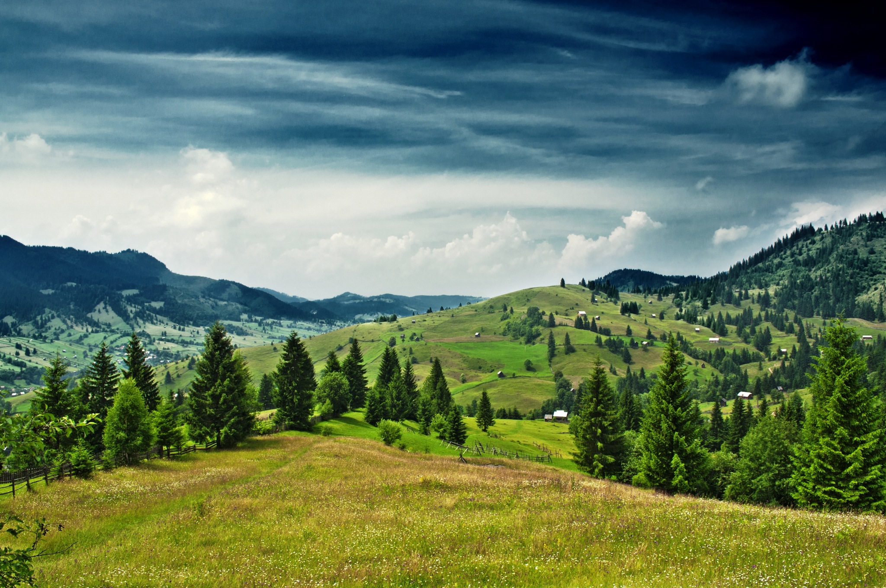
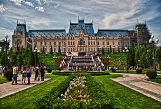
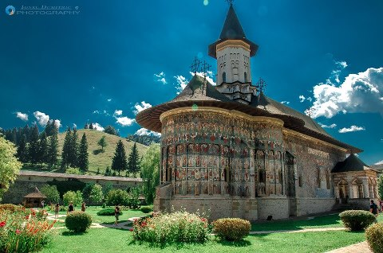
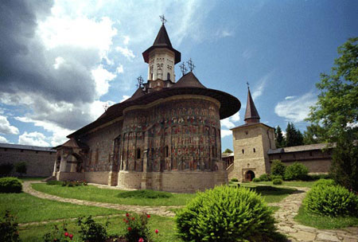
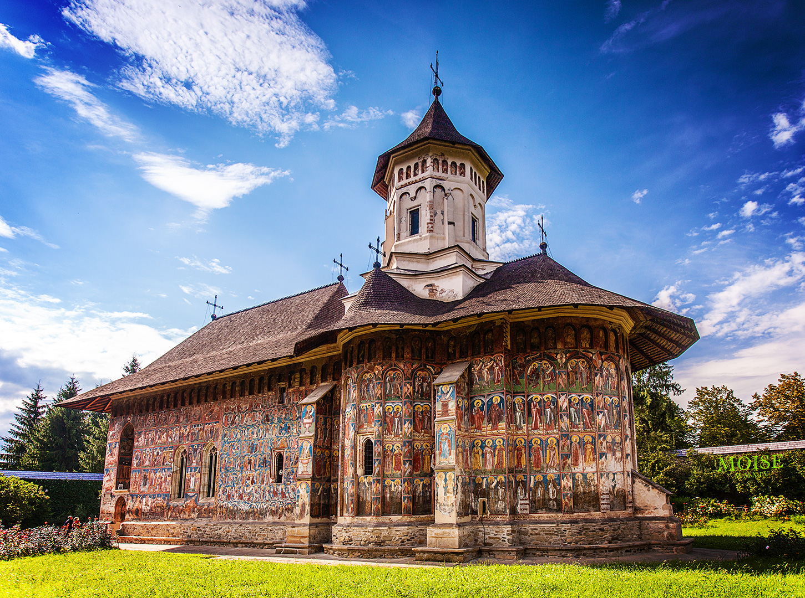
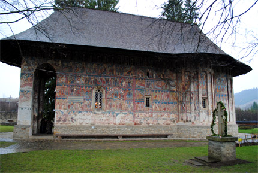

| Bucovina | |
|---|---|
|  | Bucovina - provincia nord-estica a României - este renumită datorită minunatelor fresce exterioare de pe pereţii mânăstirilor sale. Aceste mânăstiri, culmi ale artei, cu influenţe bizantine, reflectă dezvoltarea civilizaţiei Moldovei în secolele al XV-lea şi al XVI-lea, sub domnia lui Ştefan cel Mare (1457-1504).Există numeroase trasee marcate pentru drumeţii, campinguri, iar in oraşele mari, hoteluri confortabile. |
| Iasi si Suceava | |
|---|---|
|  | Aceste foste capitale vă vor vrăji si vă vor determina să parcurgeţi cât mai multe itinerarii bucovinene. În Iaşi, oraş împortant al întelectualităţii româneşti, se afla cea mai veche universitate din ţară. Cel mai cunoscut monument al oraşului este biserica Trei Ierarhi, care dateaza din anul 1639. În Suceava, oraş care are legaturi aeriene si feroviare directe cu Bucureştiul, merita să vizitaţi ruinele cetăţii voievodale a lui Ştefan cel Mare. |
| Manastiri din Bucovina | Aceste mânăstiri sunt principala atracţie a Bucovinei, datorită frescelor în culori vii de pe zidurile bisericilor lor. SuceviţaComplexul mânătirii Suceviţa, aşezat într-o minunat vale verde, este fortificat asemenea unei citadele, având turnuri de veghe în cele patru colţuri. Mânăstirea VoroneţPicturile sunt o dovadă a adaptării artei clasice bizantine la realităţile moldoveneşti. HumorÎn ansamblul pictural există şi o ilustrare a poemului "Căderea Constantinopolului", care arată sentimentele românilor faţa de turci.Scopul acestei picturi este menţinerea credinţei creştine a românilor |
|
|---|---|---|
|  |  | |
|  |  | |